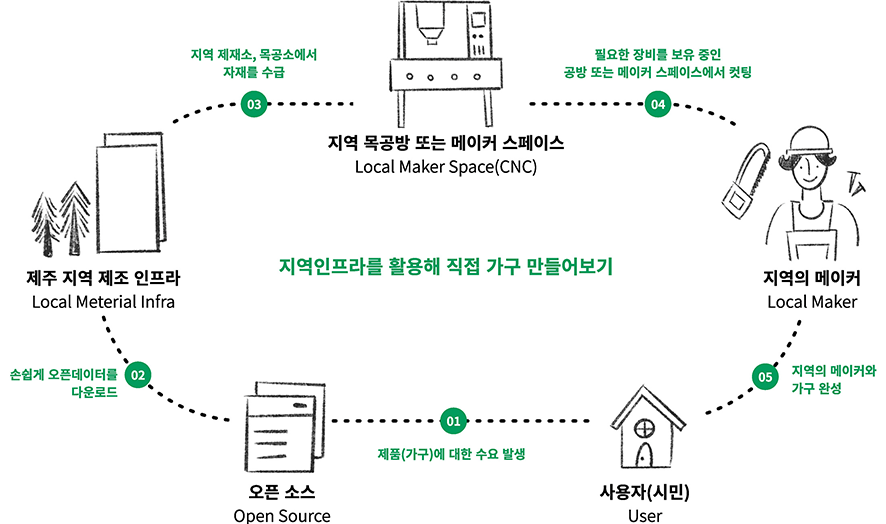

센터소개
제주의 지속가능한 제조 프로젝트(ㅈㅈㅈ)
제주의 고유한 제작 인프라 환경에 관한 이해와 정보를 토대로 지속가능한 제조에 대한 시도를 함께 하는
지역 내 주체(공간)를 발굴하고 협력하여 다양한 주민들이 지속가능한 제조방식에 참여할 수 있는 기회를 제공합니다.

 제주지역 내 제조 관련 자원조사 및 사전워크숍 진행
제조 관련 자원(CNC보유공간, 제재소, 지역메이커 등) 을 조사•발굴, 소통협력공간에서 사용될 가구를 시민들이 직접 디자인하고 제작해보는 워크숍 진행
제주지역 내 제조 관련 자원조사 및 사전워크숍 진행
제조 관련 자원(CNC보유공간, 제재소, 지역메이커 등) 을 조사•발굴, 소통협력공간에서 사용될 가구를 시민들이 직접 디자인하고 제작해보는 워크숍 진행
 지역 내 메이커들과 협력 위한 기반 조성
제주의 지속가능한 제조 프로젝트를 장기적으로 수행 해나가기 위해 지역 메이커 대상 오픈소스 및 CNC 교육 제공, 메이커들과 협력하여 시민참여형 워크숍 기획•운영
지역 내 메이커들과 협력 위한 기반 조성
제주의 지속가능한 제조 프로젝트를 장기적으로 수행 해나가기 위해 지역 메이커 대상 오픈소스 및 CNC 교육 제공, 메이커들과 협력하여 시민참여형 워크숍 기획•운영
 소통협력공간 제작공간을 기반으로 지속가능한 제조 생태계 조성
지역의 메이커 대상 오픈소스•CNC 심화과정 및 시민참여형 워크숍 운영, 소통협력공간의 제작공간을 기반으로 지속가능한 제조문화 확대
소통협력공간 제작공간을 기반으로 지속가능한 제조 생태계 조성
지역의 메이커 대상 오픈소스•CNC 심화과정 및 시민참여형 워크숍 운영, 소통협력공간의 제작공간을 기반으로 지속가능한 제조문화 확대
- 제조하는 재주가 좋아!
-
목공 *1)오픈소스와 *2)CNC 기계를 이용해 누구나 필요한 가구를 직접 만들고 *3)메이커 문화와 지속가능한 제조방식을 경험해보는 프로그램 운영
- *1)오픈소스 (Open Source) : 공개적으로 이용할 수 있게 설계되어 누구나 자유롭게 확인, 수정, 배포할 수 있는 자료
- *2)CNC 기계 : 기계에 컴퓨터 프로그램을 내장해 디자인한 도면대로 목재를 재단할 수 있어 효율적인 가구 제작이 가능함
- *3)메이커 문화 : 무언가를 만들고 싶어하는 사람들이 자발적으로 모여 아이디어를 공유하고 발전시켜나가는 흐름과 움직임